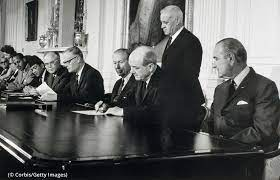
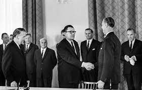

Desde el comienzo de la era nuclear, después del uso de armas nucleares en Hiroshima y Nagasaki en 1945, quedó claro que los países que desarrollaran capacidades nucleares permitirían el desvío de tecnología y materiales para la producción de armas nucleares. .. Por lo tanto, la cuestión de prevenir tal cambio se ha convertido en un tema central en el debate sobre el uso pacífico de la energía nuclear.
Los esfuerzos por construir un sistema internacional que permitiera a todos los países acceder a las salvaguardias adecuadas, iniciados en 1946, no lograron este objetivo en 1949 debido a las graves diferencias políticas entre las grandes potencias. En ese momento, Estados Unidos y la antigua Unión Soviética probaron armas nucleares y comenzaron a almacenarlas en el arsenal. En diciembre de 1953, el presidente de los Estados Unidos, D. Eisenhower, presentó a la 8ª Asamblea General de la Asamblea General de las Naciones Unidas una propuesta de "Átomos para la paz" y pidió la creación de una organización internacional.


¿Como las armas nucleares afectan la política internacional y como la afecta el TNP?